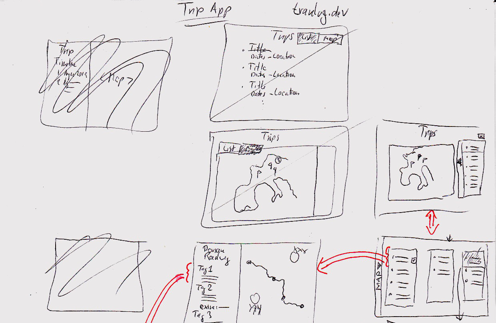
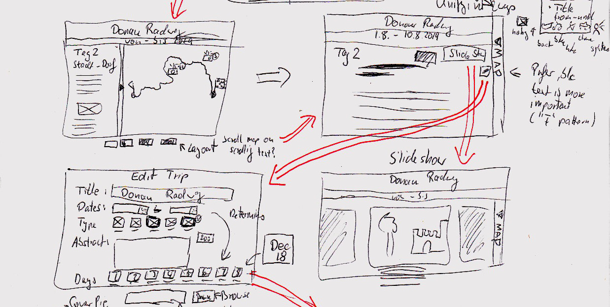
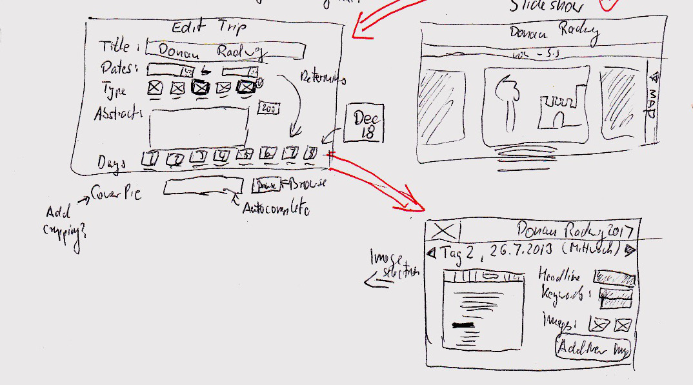

UX and Wireframes
After we’ve looked at the root domain story previously we have gotten a decent overview of the domain, i.e. the problem space and we have gotten some idea of where the app might go in the future with the possibility of a picture book generation option and potentially a community based recommendation feature among others.
Based on the previous stage of the process, which will have included more domain stories to bring light into the more detailed stories, we can start with a high-level UX phase which will attempt to come with a visual representation of how the elements we identified in the domain story might fit together and even how they might be arranged on a page and work together.
In the end, we should have an idea of how we can organize our code to avoid a big ball of mud by properly grouping and isolating our code.
Needed functionality and screens
We can use the domain story developed in the previous step to identify some functionality that we need to create designs for.
We know there are multiple trips per application user, which each consist of multiple days, which each comprise information on what happened that day and where. There is a significant chunk of data we need to capture, display and the user must navigate. Before we get to the forms capturing all that data, let’s think about how we’re going to display a list of trips to users of the application.
Home screen showing trips
For the navigation of the available trips, several options come to mind:
- A simple table listing the title, destination, dates etc. This list could be grouped by activity, geographic region or by duration (day vs. week-long trips, for example).
- A map showing the locations where the trips took place. One can imagine a number of separate,
map-based presentations:
- A trace of the travel route (in cases of a bike, hiking, cross-country skiing and ski touring, climbing or other active sports type trip)
- A “blob” of some sort indicating roughly the center point of the trip, with maybe an icon in it representing what type of trip it is (hiking, biking, canoeing etc.)
- An aggregation representation, which hides the details of trips in the same area and displays simply a circle in a rectangle showing the area. The circle would show a number indicating how many trips are recorded in that area. When the map is zoomed in far enough, the aggregation would break apart into its component trips, possibly creating new groupings if trips are still too close to each other to reasonably distinguish.
- A search feature which might find travel routes based on type, key words, location etc.
Leaving aside the search feature for now, the following doodles can be drawn. They show
the evolution from separate list and map displays, with a toggle button, to a combined approach
with two integrated displays of both the trips on the map and as a list to its side:

The functionality envisioned here in the second row from the bottom is a split view with the map on the left and a list of the trips displayed on the map to its right. This creates a linked view, so if (when) we introduce a trip filter or search, these two displays will adjust with at the same time with the same data, but with different forms of display.
Next to the box with the trips is another long vertical box with a black triangle inside. This triangle is intended to “open” the list display and hide the map, leading to the sketch right below it, where we now have three columns of lists and no map. The drawer handle element has now moved to the screen’s far left and when clicked, will restore the original split view between map and list. Animating this open/close functionality will make it easy for the user to follow what happens on the screen (and fun for front-end developers to implement).
The three-column display could be expanded into a horizontally scrolling more-than-three column display, where every column represents a trip type, country, continent, year etc. The options here are limitless, and for my little trial project, I’ll leave it at that for now. But this is a good thing to keep in mind when implementing, that this screen might have additional functionality in the future, that we won’t do now, but should certainly avoid to obstruct with the way we structure our code.
To return briefly to the map view, we see a gaggle of flags on the map. This means that relating to our discussion before, that here, the designer decided on a simple symbol for a trip as a starting point, ignoring for the moment the other aforementioned options of showing a trace or grouping trips that are too close together.
Finally, in the bottom middle of the drawing above is a screen that shows an overview after selecting a trip from the trip list. This screen displays:
- An overview of the route taken on the trip in the form of a map.
- The trip title with relevant information and possibly a short summary of the day’s travel
The entry for the 2nd day seen in this sketch contains a UI element labelled “extra”. When clicked, it will display “extra” or supporting information, such as descriptions of details about museum visits or similar content that would bog down the reading experience/flow for the casual reader, but carries some interest for the person reporting on the trip.
Trip details
From the overview display of a trip’s stops we get to the detail view about a day, with wireframes looking like this, starting in the top left:

Here we see that the header is split in two with a large bar for the trip title and a smaller bar showing the start and end locations for the stage of the trip traveled on that day.
Right below is again the bifurcated display of text and the map. This time, the map is on the right instead of on the left as in the all-trips overview. In a final design, this behavior should be unified, and as the note in the drawing indicates, having the list on the left and the map on the right is preferable, because people tend to use the F-shape pattern when consuming content on the screen. The map in this scenario would be easily scannable and comprehensible on the right and users could make a note that it’s there for when they want to look at it. However, with the map on the left, users would have to read down the middle of the screen, which is likely to go against their usual behavior and possibly cause them to miss content in the write-up — or upset them enough to give up on the application.
This content arrangement — map on the right — would allow people to stay in their usual pattern on the web and make the site possibly more usable. This is an assumption, however, that should be validated using user research in a UX lab.
This sketch also contains the flyout user interface, where the user can expand the copy and hide the map to focus on the reading. In addition, just below the indicated browser window, as a late entry, are some map controls that allow to change the ratio of map to copy in 30% increments, so from 0% text and all map to 100% text and no map, which is reflected in the drawing in the top right.
On the drawn screen in the top right, there are two buttons:
- to edit that day’s information on the edit screen (shown in the bottom left) and
- to show a slide show of the images associated with that travel day.
I’ll leave it at that for the presentation, but want to expand a little bit on the form in the lower left.
Capturing data for a day — the trip day form
To round things out (at least a little) here is a discussion of the envisioned behavior when editing a trip day:

It’s a pretty straight-forward form with a few twists:
- After entering the trip dates in the second row, the application will automatically generate a list of buttons for the days seen at the bottom right of the sketched screen. These buttons are labelled with the date and will bring the user to the form capturing the information for that day’s travel.
- Again below the “visible” part of the screen is a file upload for a cover picture for that day. The annotation reads “Add cropping,” which refers to a potential feature allowing the user to determine the visible area of the cover image for that day, since not every user has access to Photoshop or Gimp or is knowledgeable about image manipulation techniques.
- In the bottom right is the screen capturing a day’s details. It also is pretty straightforward, but allows to add images using a button. The actual uploading interface is not shown here.
- The black triangles near the top allow a user to navigate to and edit adjacent days. From a tech perspective, this would trigger the sending of the data to the server for storage.
That should suffice for the UX part. It is incomplete and of course there is much more to discuss, to understand and to find out, but I hope this has provided some insight into how the interface and the structure of the application would come together — before even a single line of code has been written.
In the following post, we’re going back to the software architecture we started to elicit using the domain storytelling technique, but now wth a much better understanding of what the UI will look like, how the designers imagine this application would turn the users into happy, paying customers.
Still open questions
Despite this effort, there remain a number of open questions:
- We permit to provide a set of keywords for a trip. This might later lead to a keyword search feature for the public to research trips in a region they are consider to travel in. In case this happens, it might be worthwhile raising the issue of privacy in this phase: Should users be able to set trips to “private” and prevent sharing? If so, would this apply globally for all their trips or on a trip-by-trip basis — or a mix of both?